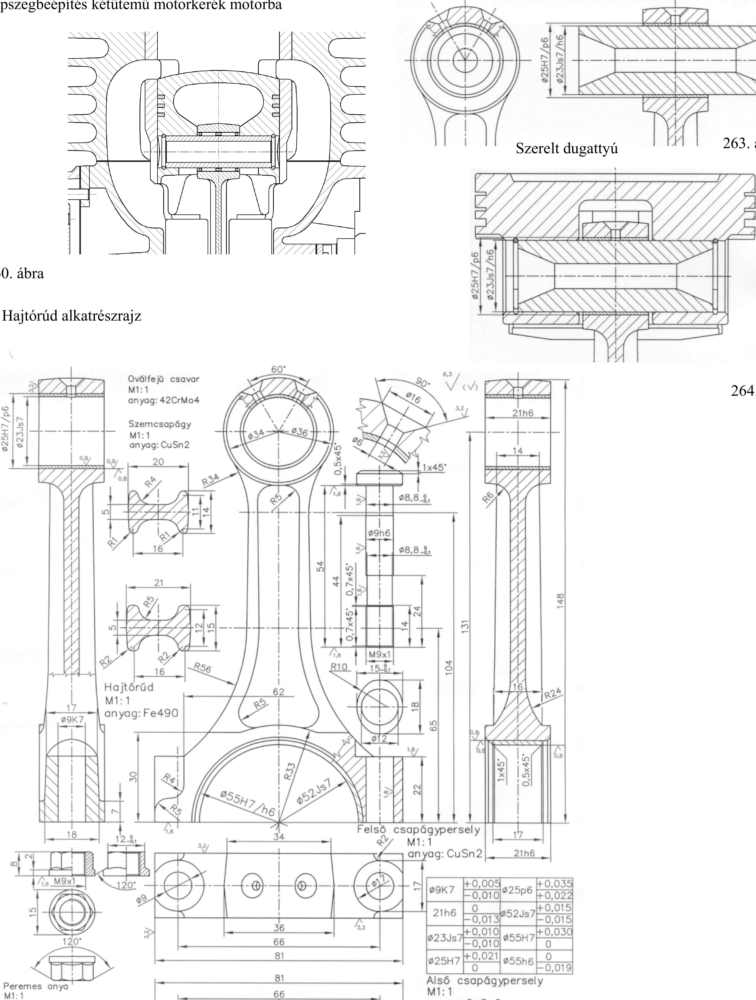

14. Szegek és csapszegek Mintarajzok csapszegek beépítésére Csapszegbeépítés kétütemű motorkerék motorba Hajtórúd csapszeggel ű' £ S < E % n rO N CM & 263. ábra 260. ábra Hajtórúd alkatrészrajz 264. ábra 09K7 -1-0,005 025p6 + 0,035 -0,010 +0,022 21h6 0 +0,015 -0,013 P3ZJS / -0,015 023Js7 + 0,010 055H7 +0,030 -0,010 0 025H7 +0,021 055h6 0 0 -0,019 , 66 I i 1 < ÍL _ u _ tz Alső csapágypersely Ml: 1 anyag: CuSn2 Kengyel Ml: 1 anyag: Fe490— 2 261. ábra 74
